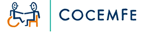

<div class="body" [style.fontSize.px]="obtenerTamanoTexto()">	
	<div class="capaNegra">
		<h1 [style.fontSize.px]="obtenerTamanoTexto()" aria-label="Título principal"> Descubre tutoriales interesantes </h1>
		<p class="texto" [style.fontSize.px]="obtenerTamanoTexto()" aria-label="Descripción de Adapta-Tech">En <strong>Adapta-Tech</strong>, encontrarás
         enlaces a tutoriales específicos para distintos tipos de discapacidades, así como guías detalladas para
          la tramitación de documentos esenciales. Nuestra misión es proporcionar información accesible y útil, 
          ayudándote a superar obstáculos y simplificar procesos. Explora nuestra plataforma para empoderarte con 
          conocimientos que te permitan llevar a cabo trámites de manera efectiva y mejorar tu calidad de vida.
          <br> <strong> ¡Estamos aquí para apoyarte! </strong>
          <br> Algunas de las ayudas destacadas son:</p>

          <ul class="lista" aria-label="Lista de tutoriales y recursos">
            <li><a href="https://www.youtube.com/watch?v=EfPuA6LIkIk" target="_blank"><span>Certificado Digital</span>: Como usar certificado digital en el móvil</a></li>
            <li><a href="https://www.youtube.com/shorts/J19Bl5zTQ9s" target="_blank"><span>Cómo cambiar los datos personales en la seguridad social</span></a></li>
            <li><a href="https://www.youtube.com/shorts/Ef5kmaNozao" target="_blank"><span>Ayudas Públicas</span>: Cómo encontrar todas las ayudas públicas.</a></li>
            <li><a href="https://www.youtube.com/watch?v=jrQEaiAfwoc" target="_blank"><span>Incapacidad Permanente</span>: Cómo solicitar la Incapacidad Permanente por Convenios Bilaterales [con certificado digital].</a></li>
            <li><a href="https://www.youtube.com/watch?v=_HZBA1uugAs" target="_blank"><span>Vida Laboral</span>: Como obtener tu Vida Laboral OnLine</a></li>
            <li><a href="https://www.youtube.com/watch?v=i_I-Il8Cjjk" target="_blank"><span>Certificados de prestaciones</span>: Cómo solicitar tus certificados de prestaciones [sin certificado digital].</a></li>
            <li><a href="https://www.youtube.com/watch?v=1MxGXo92qoc" target="_blank"><span>Apps de la Seguridad Social</span>: Manual de uso de las apps para móviles de la Seguridad Social.</a></li>
          </ul>
		<p class="texto" [style.fontSize.px]="obtenerTamanoTexto()"> Además, os ofrecemos:</p>
		<ul class="lista"  aria-label="Lista de tutoriales y recursos">
            <li><a href="https://www.youtube.com/watch?app=desktop&v=ua-PHtFZqNk&t=2s" target="_blank"><span>Presentación Electrónica General (PEG) de la Junta de Andalucía </span></a></li>
            <li><a href="https://www.youtube.com/watch?v=aiS-NKf8gxM" target="_blank"><span>Solicitud y cancelación de cita previa en la #ATRIAN</span></a></li>
            <li><a href="https://www.youtube.com/watch?v=DYNloMwk1Y0" target="_blank"><span>Instrucciones para presentar una queja o sugerencia a la Administración Tributaria de Andalucía </span></a></li>
            <li><a href="https://www.youtube.com/watch?v=YXleIH6b2Q4" target="_blank"><span>Bolsa Única Común de Andalucía </span></a></li>
          </ul>
		<p class="texto" [style.fontSize.px]="obtenerTamanoTexto()">Estos enlaces abarcan una amplia gama de necesidades,
             fundamentalmente  son tutoriales e instrucciones para rellenar documentación de diversos recursos a nuestro alcance. <br>
             Para información detallada sobre ayudas específicas, te invitamos a explorar nuestras secciones especializadas. </p>
			
		<div class="contenedor" aria-label="Contenedor de enlaces a recursos externos">
			<!-- * -->
				<div class="imagenContenedor">
					
					<div class="botonContenedor">
						<button [style.cursor]="pointerCursor" onclick="window.open('https://andaluciainclusiva.es/', '_blank');" aria-label="Enlace a COCEMFE"> COCEMFE </button>
					</div>
				</div>
			<!-- * -->
				<div class="imagenContenedor">
					
					<div class="botonContenedor">
						<button [style.cursor]="pointerCursor" onclick="window.open('https://www.juntadeandalucia.es/temas/familias-igualdad/discapacidad/prestaciones.html#toc-subvenciones-para-la-inclusi-n-de-la-juventud-con-discapacidad', '_blank');" aria-label="Enlace a prestaciones de la Junta de Andalucía"> Prestaciones </button>
					</div>
				</div>
			<!-- * -->
				<div class="imagenContenedor">
					
					<div class="botonContenedor">
						<button [style.cursor]="pointerCursor" onclick="window.open('https://www.fundaciononce.es/es/que-hacemos/proyectos-y-solicitudes-de-ayuda', '_blank');" aria-label="Enlace a proyectos y solicitudes de ayuda de fundación once"> Solicitudes </button>
					</div>
				</div>
			</div>
			
		
		<em class="texto" [style.fontSize.px]="obtenerTamanoTexto()">Esta página web es accesible para personas con discapacidad <span>visual</span>, <span>física</span>, <span>auditiva </span>y <span>cognitiva</span>.</em>
		<p class="texto" [style.fontSize.px]="obtenerTamanoTexto()">Si necesitas ayuda adicional para acceder a la información de esta página, por favor <a class="contacto" routerLink="/contacto" [style.cursor]="pointerCursor">contáctanos</a>.</p>
	</div>
</div>

